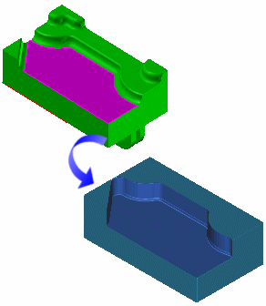
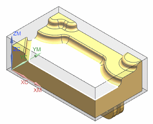

在工序导航器中，双击 BLNK_GEOM 以编辑该工序。
可以通过选择面、片体或者表面区域来定义特定的切削区域。切削体由向上投影切削区域到毛坯顶部定义，切削区域可以通过使用在边上延伸切削参数来扩大。扩大切削区域对于移除沿部件边的材料与切削区域之间的材料很有用，如果切削区域未指定，将会加工整个部件。

这个功能提供了一种方便的方法来限制加工到某个局部特征，对于高速加工和传统粗加工很有用。
您将定义一个切削区域，以将粗加工限制到部件定义一个指定的面。
点击指定切削区域 。
将打开切削区域对话框。
选择如下所示的面。

点击确定。
将打开型腔铣对话框。